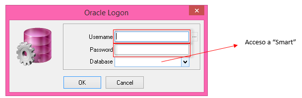
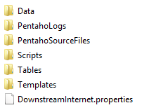
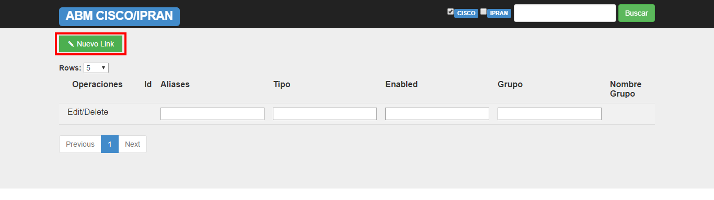
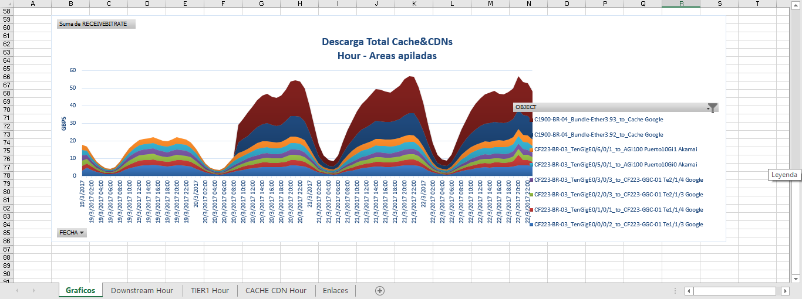
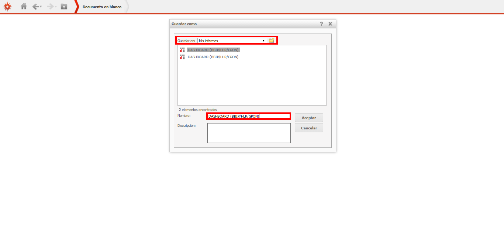
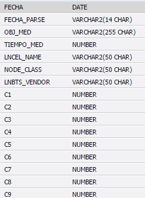
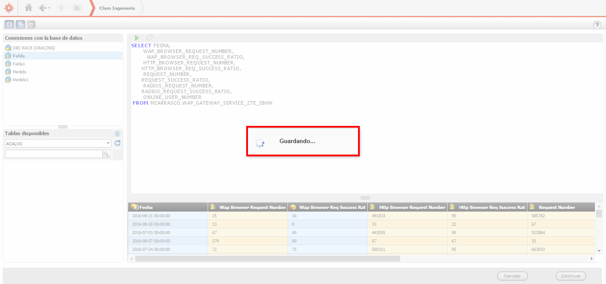
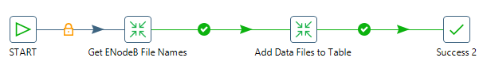
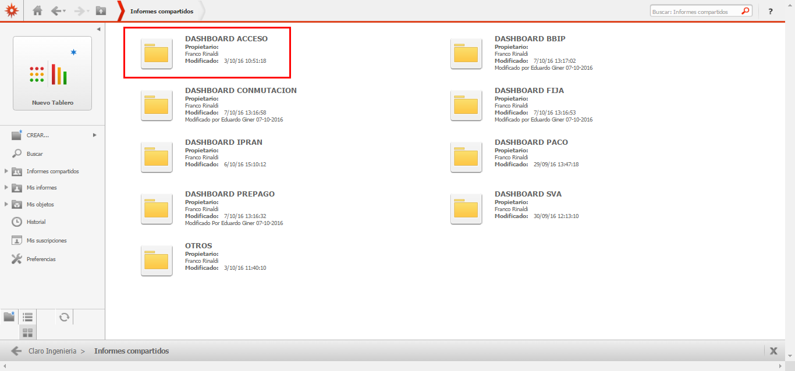
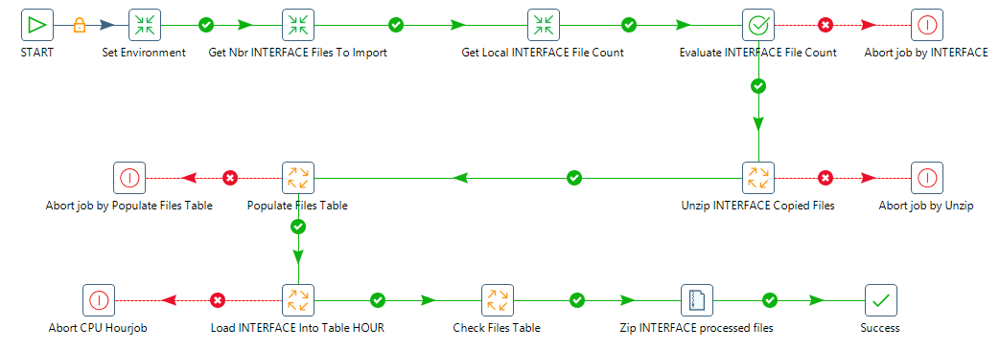

INSTRUCTIVO DASHBOARD MICROSTRATEGY¶
1. OBJETIVO¶
El presente documento busca explicar detalladamente la utilización de la herramienta microstrategy para crear un documento.
2. DEFINICIONES¶
- Dashboard: Es un reporte, presentado en excel cada 15 días a las diferentes áreas de la empresa (BBIP, IPRAN, PACO, RF, etc), mostrando a cada una, los desvíos y datos referidos a cada una de sus plataformas.
3. INSTRUCCIONES OPERATIVAS¶
Para realizar el instructivo de MircroStrategy se necesita tener acceso a la siguiente URL: http://microstrategy.claro.amx:5003/MicroStrategy
Al ingresar a la URL se debe ingresar el usuario y contraseña:
Se debe hacer clic en “Claro Ingeniería”:
Se debe hacer clic en el botón “Continuar”:


4. CREACIÓN DEL DOCUMENTO¶
a. Importación de datos¶
Se debe hacer clic en “Importar Datos”:
Se debe elegir la opción “Definido por el usuario” :

Se debe seleccionar el Servidor en el cual se ejecutara la querie:

Al seleccionar el servidor, se debe crear la querie:

Al crear la querie y seleccionar el servidor que va a utilizar, se debe hacer clic en el botón “Continuar”:
Luego se debe ingresar el nombre y la ubicación con la cual se guardara la querie, haciendo clic en el botón “Aceptar”:

Cuando la querie fue guardada con éxito, muestra el siguiente mensaje:

b. Crear Dashboard¶
Se debe hacer clic en “Nuevo Documento”:

Para crear un nuevo documento, hacemos clic en “Nuevo Documento”:

Al crear el nuevo documento, nos muestra el formato en que se creara el reporte:

Al agregar datos, el reporte toma la siguiente forma:
- Documento en “Modo Diseño”, se utiliza para armar el reporte con las filas y columnas que se van a utilizar.
- Documento en “Modo interactivo”, nos muestra el reporte con su diseño pero no permite ser editado.

- Documento en “Modo editable”, nos muestra el reporte diseñado, se pueden editar los datos

Una vez armado el reporte se hace clic sobre el botón “Guardar”:

Luego se debe ingresar el nombre del documento y la ubicación con la cual se guardara el documento, hacer clic en el botón “Aceptar”:
El documento fue guardado con éxito, mostrando el siguiente mensaje:

c. Modificación de querie¶
En caso de modificar una querie que ya ha sido creada, se deben seguir los siguientes pasos: Ingresar a la carpeta “Informes Compartidos”:

A modo de ejemplo, tomamos la querie “ZTE”

Sobre la querie se debe hacer clic derecho –> Modificar
Nos muestra la querie que deseamos modificar:

Modificamos la querie y luego hacer clic sobre el botón “play” para que muestre el resultado que ha cambiado:

Hacer clic sobre el botón “Continuar”:
En pantalla nos muestra:

La querie fue actualizada con éxito, mostrando el siguiente mensaje:
d. Ejecución de la querie¶
Para que el reporte dashboard sea actualizado cada semana, se realiza de la siguiente manera:
Ingresar a la carpeta “Informes Compartidos”

Ingresar a la carpeta “Dashboard Acceso”
A modo de ejemplo, tomamos la querie “BSC_APERTURA CPU LOAD”

Sobre la querie se debe hacer clic derecho –> Publicar Nuevamente


Cuando la solicitud fue actualizada con éxito, muestra el siguiente mensaje:
e. Ejecución Automática de la querie¶
Para que el reporte dashboard sea ejecutado automáticamente, se realiza de la siguiente manera:
Debe ingresar a la carpeta donde se encuentran los dashboard, como por ejemplo DASHBOARD IPRAN

Luego ingresar a las carpeta de las consultas, por ejemplo –> CONSULTAS IPRAN

Luego elegimos la querie que necesitamos actualizar automáticamente, por ejemplo –> IPRAN-CABECERO LAGS
Luego se debe hacer clic en –> Agregar suscripción de listas de historiales

En pantalla nos muestran los siguientes datos:
Se debe modificar la planificación, seleccionando –> 950- Ingeniería

Luego de seleccionar la opción del paso anterior se debe hacer clic en el botón –> Aceptar

En pantalla nos muestra el siguiente mensaje de confirmación:

Se debe hacer clic en el botón –>“Aceptar” En pantalla nos muestra que la consulta será ejecutada automáticamente todos los días: